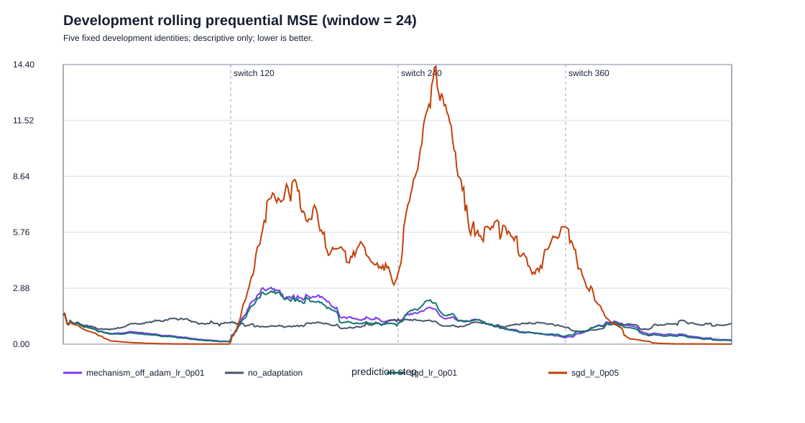
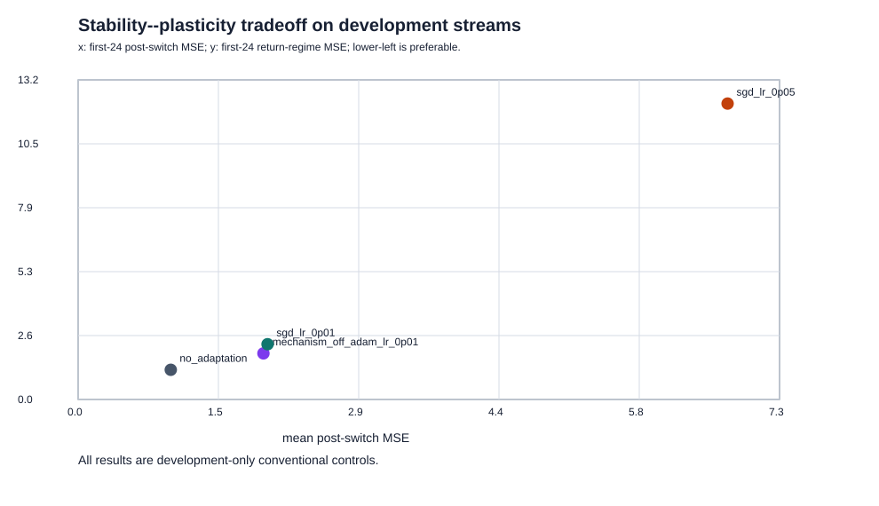

Descriptive analysis of a development-only conventional-baseline bundle; no candidate mechanism or protected evaluation was run.
Input artifact map SHA-256: b39fa49ab15dea6072ecd8fe0de36bca2e4ac71b8b6a598db8075ccc277b4267
| Policy | Overall MSE, mean +/- SD | Switch MSE | Return MSE | Total updates |
|---|---|---|---|---|
| mechanism_off_adam_lr_0p01 | 0.9978 +/- 0.0943 | 1.9225 | 1.9003 | 2380 |
| no_adaptation | 1.0110 +/- 0.0671 | 0.9611 | 1.2241 | 0 |
| sgd_lr_0p01 | 0.9484 +/- 0.0627 | 1.9652 | 2.2782 | 2380 |
| sgd_lr_0p05 | 3.3480 +/- 0.2161 | 6.7383 | 12.2006 | 2380 |


See analysis.json for every input artifact hash, raw paired differences, descriptive bootstrap intervals, and run accounting.